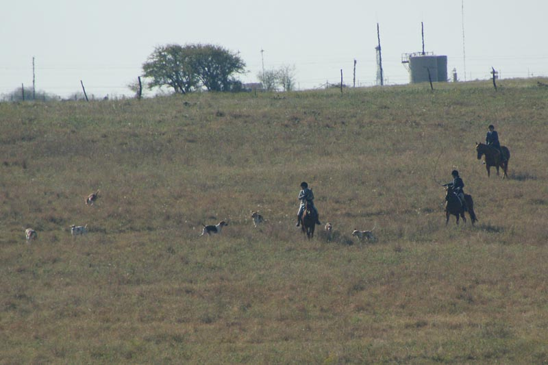

Hunting at Bedrock
Thistle wasn't concerned, but everything was a bit new to Ketel.
Chris and Susan to the West.
Mary Ann and Katie watching Gabrielle turn a hound.

Laura watching the hounds with Melanie.
Not a lot of color this fall, but still a gorgeous view.
Chris and Susan on a ridge.

Working across Fiddler pasture.

Enjoying the water.
Broom weed half as high as Thuy.

Jennifer and Dave watched by a hawk.
A little hazy and hard to see the windmills on the next rise.
Mary Ann and Katie staying in viewing distance.
Jennifer and Dave coming up the road in Fiddler pasture.
Ketel looking flashy for the cameraman.
Aver and Shorty off in the distance.
Casting around to pick up the scent again.
Concho thinks he's found it.
Laura's horse gleams like copper.
Hounds coming back to Melanie.

Thuy's an accommodating guy.
Gabrielle catching up to a hound.
Amanda was Thuy's groom for the day. She tacked up and rode him over to the hound trailer for the huntsman.
She then retrieved him at the end of the day.